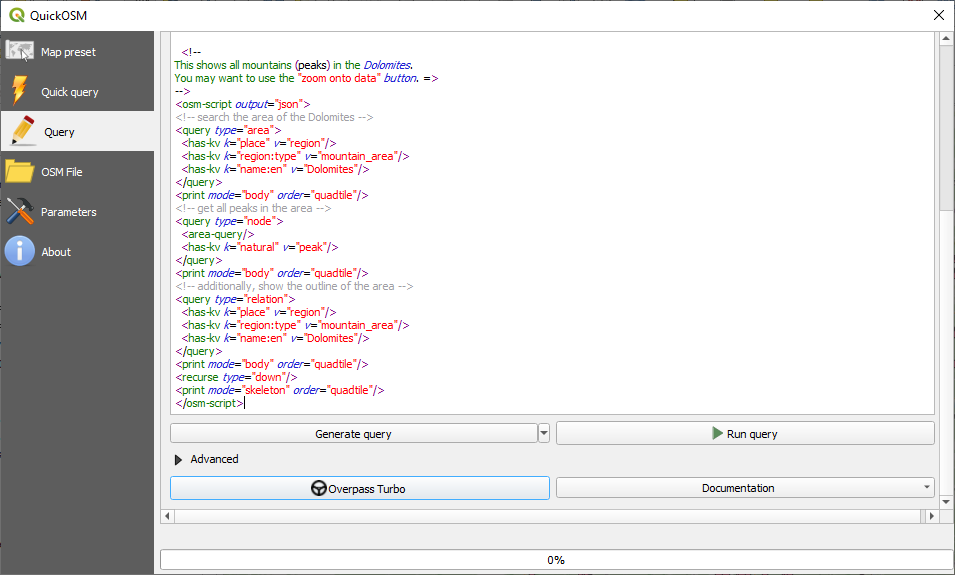

重要
翻訳は あなたが参加できる コミュニティの取り組みです。このページは現在 100.00% 翻訳されています。
9.2. レッスン: 便利なQGISプラグイン
プラグインをインストールして有効化・無効化することができるようになりました。それではいくつかの便利なプラグインの例を見て、これが実際にどのように役に立つか見ていきましょう。
このレッスンの目標: プラグインインターフェイスに慣れ、いくつかの便利なプラグインを使ってみる。
9.2.1. ★☆☆ （初級レベル） 理解しよう: QuickMapServicesプラグイン
QuickMapServicesプラグインは、QGISプロジェクトにベースマップを追加するシンプルで使い勝手の良いプラグインです。様々なオプションや設定があるので、その機能の一部をご紹介します。
新しいマップを開始し、
training_dataGeopackageから roads レイヤを追加します。QuickMapServices プラグインをインストールしてください。
をクリックします。最初のメニューは、様々なマッププロバイダ（
OSM、NASA）と利用可能なマップの一覧です。エントリをクリックすると、ベースマップがプロジェクトに読み込まれます。

いいですね！しかし、QMSの主な強みのひとつは、多くのデータプロバイダにアクセスできることです。それらを追加してみましょう。
をクリックします
More services タブに移動します。
このタブのメッセージをよく読んで、同意したら Get Contributed pack ボタンをクリックします。
保存 をクリックします。
メニューを再度開くと、利用可能なプロバイダーが増えていることがわかります。

あなたのニーズに最も適したものを選択し、プロジェクトにデータを読み込みます！
また、現在利用可能なデータ・プロバイダーを検索することもできます。
をクリックして、プラグインの検索タブを開きます。プラグインのこのオプションは、利用可能なベースマップをマップキャンバスの現在の範囲や検索語によってフィルタリングすることができます。
Filter by extent をクリックすると、利用可能なサービスが1つ表示されるはずです。サービスが見つからない場合は、ズームアウトして世界（または現在地）をパンするか、キーワードで検索してください。
返されたデータセットの横にある Add ボタンをクリックすると、それが読み込まれます。
ベースマップが読み込まれ、マップの背景ができます。

9.2.2. ★☆☆ （初級レベル） 理解しよう: QuickOSMプラグイン
QuickOSMプラグインは、驚くほどシンプルなインターフェースで、OpenStreetMap のデータをダウンロードすることができます。
新しい空のプロジェクトを開始し、
training_dataGeoPackage から roads レイヤを追加します。QuickOSM プラグインをインストールしてください。このプラグインはQGISツールバーに2つの新しいボタンを追加し、またそれには メニューからアクセスすることができます。
QuickOSMダイアログを開きます。このプラグインには様々なタブがありますが、ここでは Quick Query のタブを使います。
一般的な Key を選択して特定の機能をダウンロードすることもできますし、より具体的に Key と Value のペアを選択することも可能です。
Tip
もしあなたが Key と Value のシステムについてよく知らないのであれば、 Help with key/value ボタンをクリックしてみてください。OpenStreetMapのこのコンセプトの完全な解説のウェブページが開きます。
Key メニューから railway を探し、 Value を空にします。つまり、値を指定せずに全ての railway 機能をダウンロードすることになります。
次のドロップダウンメニューで Layer Extent を選択し、 roads を選択します。
Run query ボタンをクリックします。

数秒後、プラグインはOpenStreetMapで railway としてタグ付けされたすべての地物をダウンロードし、直接マップにロードします。
これだけです! すべてのレイヤは凡例に読み込まれ、マップキャンバスに表示されます。
{kind=link}
警告
QuickOSMはデータをダウンロードする際に一時的なレイヤを作成します。恒久的に保存したい場合は、レイヤの横にある  アイコンをクリックし、好みのオプションを選択します。または、QuickOSMの Advanced メニューを開き、 Directory メニューでデータの保存先を選択することもできます。
アイコンをクリックし、好みのオプションを選択します。または、QuickOSMの Advanced メニューを開き、 Directory メニューでデータの保存先を選択することもできます。
9.2.3. ★★★ （上級レベル） 理解しよう: QuickOSMクエリエンジン
QuickOSMプラグインからデータをダウンロードする一番早い方法は、 Quick query タブを使い、いくつかの小さなパラメータを設定することです。しかし、もっと具体的なデータが必要な場合は？
あなたがOpenStreetMapのクエリマスターであれば、QuickOSMプラグインを個人のクエリにも使用できます。
QuickOSMは、Overpassの素晴らしいクエリエンジンとともに、驚くべきデータパーサを備えており、あなたのニーズに合わせたデータをダウンロードすることができます。
例えば、Dolomites という特定の山岳地域に属する山頂をダウンロードしたいとします。
このタスクは Quick query タブでは達成できません。もっと具体的に、自分でクエリを書く必要があります。これをやってみましょう。
新しいプロジェクトを始めます。
QuickOSMプラグインを開き、Query タブをクリックします。
次のコードをコピーして、クエリキャンバスに貼り付けます:
<!-- This shows all mountains (peaks) in the Dolomites. You may want to use the "zoom onto data" button. => --> <osm-script output="json"> <!-- search the area of the Dolomites --> <query type="area"> <has-kv k="place" v="region"/> <has-kv k="region:type" v="mountain_area"/> <has-kv k="name:en" v="Dolomites"/> </query> <print mode="body" order="quadtile"/> <!-- get all peaks in the area --> <query type="node"> <area-query/> <has-kv k="natural" v="peak"/> </query> <print mode="body" order="quadtile"/> <!-- additionally, show the outline of the area --> <query type="relation"> <has-kv k="place" v="region"/> <has-kv k="region:type" v="mountain_area"/> <has-kv k="name:en" v="Dolomites"/> </query> <print mode="body" order="quadtile"/> <recurse type="down"/> <print mode="skeleton" order="quadtile"/> </osm-script>
注釈
このクエリは
xmlに似た言語で書かれています。もし、Overpass QLに慣れているのであれば、この言語でクエリを記述することができます。Run Query をクリックします:

山頂レイヤがダウンロードされ、QGISに表示されます:

Overpass Query language を使うと、複雑なクエリを書くことができます。いくつかの例を見て、クエリ言語を探求してみてください。
9.2.4. ★☆☆ （初級レベル） 理解しよう: DataPlotlyプラグイン
DataPlotly プラグインは、 plotly ライブラリにより、ベクタ属性データの D3 プロットを作成することができます。
新しいプロジェクトを開始します
exercise_data/pluginsフォルダから sample_points レイヤをロードしますプラグインをインストールするには、 ★☆☆ （初級レベル） 理解しよう: 新しいプラグインをインストールする で説明されているガイドラインに従って、 Data Plotly を検索してください
ツールバーの新しいアイコンをクリックするか、 メニューから、プラグインを開きます
次の例では、 sample_points レイヤの2つのフィールドの簡単な Scatter Plot を作成します。DataPlotlyパネルでは:
レイヤフィルタで sample_points を選択し、 X Field には cl を、 Y Field には mg を設定します:

色やマーカーの種類、透明度など、さまざまな設定を変更することができます。いくつかのパラメータを変更して、下のようなプロットを作成してみてください。

すべてのパラメータを設定したら、プロットを作成するために Create Plot ボタンをクリックします。
プロットは対話的です: つまり、プロットキャンバスのサイズ変更、移動、拡大・縮小のために上部のすべてのボタンを使うことができます。さらに、プロットの各要素は対話的です: プロット上で1つまたは複数の点をクリックまたは選択すると、対応する点がプロットキャンバスで選択されます。
プロットの右下にある  または
または  ボタンをクリックすると、プロットを
ボタンをクリックすると、プロットを png 静止画像または html ファイルとして保存することができます。
もっとあります。同じページに異なる変数で異なるプロットタイプを表示する2つ（またはそれ以上）のプロットがあると便利なことがあります。これをやってみましょう!
プラグインパネルの左上隅にある
 ボタンをクリックして、メインのプロット設定タブに戻ります
ボタンをクリックして、メインのプロット設定タブに戻りますPlot Type を Box Plot に変更します
group を Grouping Field に、 ph を Y Field に選択します
パネルの下部で、 Type of Plot を SinglePlot から SubPlots に変更し、デフォルトオプション Plot in Rows を選択したままにします。

プロットを作成するには、 Create Plot ボタンをクリックします

これで散布図と箱ひげ図の両方が同じプロットページに表示されます。この状態でも、それぞれのプロット項目をクリックして、マップキャンバスの対応する地物を選択することができます。
Tip
それぞれのプロットは  タブの中で利用できる独自のマニュアルページを持っています。すべてのプロットタイプを探って、利用可能な他のすべての設定を見てみてください。
タブの中で利用できる独自のマニュアルページを持っています。すべてのプロットタイプを探って、利用可能な他のすべての設定を見てみてください。
9.2.5. 結論
QGISではたくさんの便利なプラグインを利用することができます。ビルトインツールを用いてこれらのプラグインを管理すれば、新しいプラグインを見つけ、それらを最適に利用することができます。
9.2.6. 次は?
次はリモートサーバーにホストされているレイヤーをリアルタイムで使う方法を見ていきます。